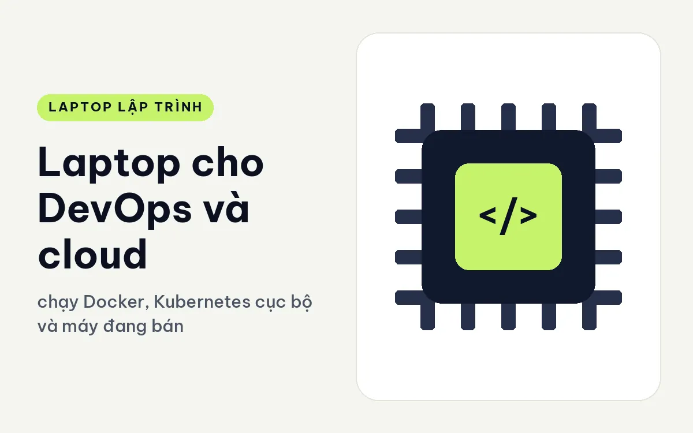
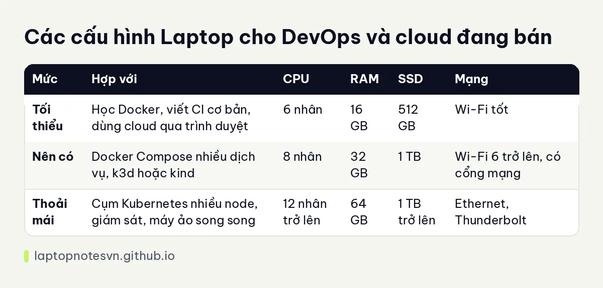

Laptop cho DevOps và cloud - chạy Docker, Kubernetes cục bộ và máy đang bán hợp

Kỹ sư DevOps ít khi viết nhiều dòng code ứng dụng, nhưng máy của họ luôn đầy cửa sổ terminal, trình duyệt mở nhiều tab console cloud, và vài cụm container chạy ngầm. Máy không cần đồ họa, nhưng cần RAM, nhiều nhân và kết nối tốt, vì phần lớn công việc là mô phỏng hạ tầng ngay trên laptop trước khi đẩy lên cloud.
Bài này đi qua các phần cứng dân vận hành hạ tầng dùng nhiều, bảng cấu hình ba mức và hai máy đang bán hợp. Các mức bên dưới là kinh nghiệm tư vấn chung.
Việc nào ngốn tài nguyên
Docker là thứ đầu tiên. Mỗi container nhẹ, nhưng khi bạn dựng một stack có cơ sở dữ liệu, hàng đợi tin nhắn, proxy và vài dịch vụ thì RAM vơi nhanh. Docker Desktop trên Windows chạy qua WSL2 và nó mặc định chiếm một phần lớn RAM nếu không bị giới hạn.
Kubernetes cục bộ là thứ tiếp theo. Các công cụ như minikube, kind hay k3d tạo cụm nhiều node ảo, mỗi node là một container hoặc máy ảo. Một cụm ba node với vài ứng dụng đã dễ chiếm 8 đến 12 GB. Nếu cần thử cả công cụ giám sát thì thêm nữa.
Công cụ hạ tầng như mã hóa Terraform hay Ansible chạy nhẹ về tính toán, nhưng bạn thường mở nhiều thứ song song: trình duyệt, ghi chú, VPN, SSH tới nhiều máy chủ. Mạng và độ ổn định của Wi-Fi hay Ethernet quan trọng không kém CPU.
SSD cần rộng vì image container, bản sao cơ sở dữ liệu thử nghiệm và file trạng thái chiếm nhiều chỗ. Còn card rời gần như không cần, trừ khi bạn vận hành cả hạ tầng chạy AI.
Cấu hình chia ba mức
| Mức | Hợp với | CPU | RAM | SSD | Mạng |
|---|---|---|---|---|---|
| Tối thiểu | Học Docker, viết CI cơ bản, dùng cloud qua trình duyệt | 6 nhân | 16 GB | 512 GB | Wi-Fi tốt |
| Nên có | Docker Compose nhiều dịch vụ, k3d hoặc kind | 8 nhân | 32 GB | 1 TB | Wi-Fi 6 trở lên, có cổng mạng |
| Thoải mái | Cụm Kubernetes nhiều node, giám sát, máy ảo song song | 12 nhân trở lên | 64 GB | 1 TB trở lên | Ethernet, Thunderbolt |
Phần chia RAM cho WSL2 và máy ảo được bàn kỹ hơn trong bài laptop chạy WSL2 và máy ảo.

Gợi ý máy cụ thể cho DevOps và cloud
Cho người vận hành hạ tầng cần mạng có dây, DELL Pro Max 14 MC14250 - Mobile Workstation (2025) đáng nghĩ tới. Máy nặng 1,83 kg, RAM LPCAMM2 từ 16 đến 64GB, có hai cổng Thunderbolt 4, HDMI 2.1 và cổng RJ45 10Gbps. Bản Ultra 7 265H có 32GB RAM và card RTX PRO 500 6GB, bản Ultra 7 255H có 16GB và Arc 140T. Cổng mạng 10Gbps hợp khi bạn kéo image lớn từ máy chủ nội bộ, nhưng chỉ có ích khi hạ tầng mạng của bạn cũng hỗ trợ tốc độ đó.
Với ngân sách gọn hơn, Lenovo ThinkPad E14 Gen 8 (2026) cho nhiều lựa chọn. Máy nặng khoảng 1,34 đến 1,4 kg. Bản AMD Ryzen AI 5 330 có hai khe SO-DIMM DDR5-5600 và nâng tối đa 64GB, rất tiện cho Docker. Bản Intel Core 7 350 chỉ có một khe SO-DIMM, tối đa 32GB chạy kênh đơn, nhưng đổi lại có hai cổng Thunderbolt 4. Vì thế nếu ưu tiên RAM lớn, bản AMD hợp hơn, còn nếu ưu tiên cổng kết nối thì chọn bản Intel.
Chọn theo mảng vận hành
Người làm CI/CD và viết pipeline chủ yếu cần máy ổn định, mạng tốt và RAM đủ chạy runner thử. Mảng này không đòi hỏi nhiều nhân, nên một máy 8 nhân 16 đến 32GB là hợp lý.
Người làm Kubernetes thật sự, nhất là khi dựng cụm nhiều node để thử nghiệm nâng cấp hoặc chaos test, cần RAM nhiều hơn hẳn. Lúc đó 32GB là mức thấp, 64GB giúp bạn khỏi phải thu nhỏ cụm thử nghiệm.
Người làm bảo mật hạ tầng hay mô phỏng mạng lại cần thêm máy ảo và thiết bị ảo, tức là cần cả nhân lẫn RAM. Dù bạn thuộc nhóm nào, hãy nhớ phần lớn việc nặng nên chạy trên cloud hoặc máy chủ thử nghiệm, laptop chỉ dùng để thử nhanh trước khi đẩy lên.
Những việc nên làm sau khi nhận máy
- Đặt giới hạn bộ nhớ và số nhân cho WSL2 trong file cấu hình, để Docker không lấy hết RAM khi bạn còn cần mở trình duyệt.
- Dùng trình quản lý thông tin xác thực thay vì lưu khóa cloud thành file rời trong thư mục dự án.
- Mã hóa ổ đĩa bằng BitLocker hoặc tương đương, vì máy của người vận hành chứa quyền truy cập vào hạ tầng thật.
- Dọn image, volume và cache build của Docker định kỳ, nếu không ổ đĩa đầy lúc nào không hay.
- Kiểm tra VPN công ty chạy ổn cùng Docker, vì một số VPN làm rối mạng ảo của container.
Người làm nhiều cũng nên giữ sẵn một bản sao lưu cấu hình terminal, dotfiles và danh sách công cụ để dựng lại máy nhanh khi cần. Chuyện này tiết kiệm nhiều giờ hơn bất kỳ nâng cấp phần cứng nào.
Nếu bạn còn đang tìm hiểu cấu hình ở mức cơ bản trước khi đi sâu vào hạ tầng, bài lập trình viên cần bao nhiêu RAM sẽ cho bạn cái nhìn chung.
Đăng ngày 09/11/2026